Welcome to My Portfolio
Delmundo, Ryvien Jim D. || BSCS-C301
Get in Touch
Delmundo, Ryvien Jim D. || BSCS-C301
Get in TouchHi, I’m Ryvien Jim Delmundo, a 3rd-year Computer Science student at City College of Angeles. I have a deep passion for technology and creativity. I enjoy drawing, playing basketball and cycling, and have a strong interest in motors and cars. Most importantly, I love exploring the world of computers, especially web development and design. My goal is to become a skilled web developer or designer, c reating visually appealing and functional digital experiences. I’m always eager to learn, improve, and take on new challenges in this ever-evolving field.
Achievement is to able to graduate highschool/Senior high although its on pandemic and also to make my parents proud, and riding my bike going places ive never been. the hard work to pedal to a place that ive never been on, currently im still traveling but right now im using my motorcycle.


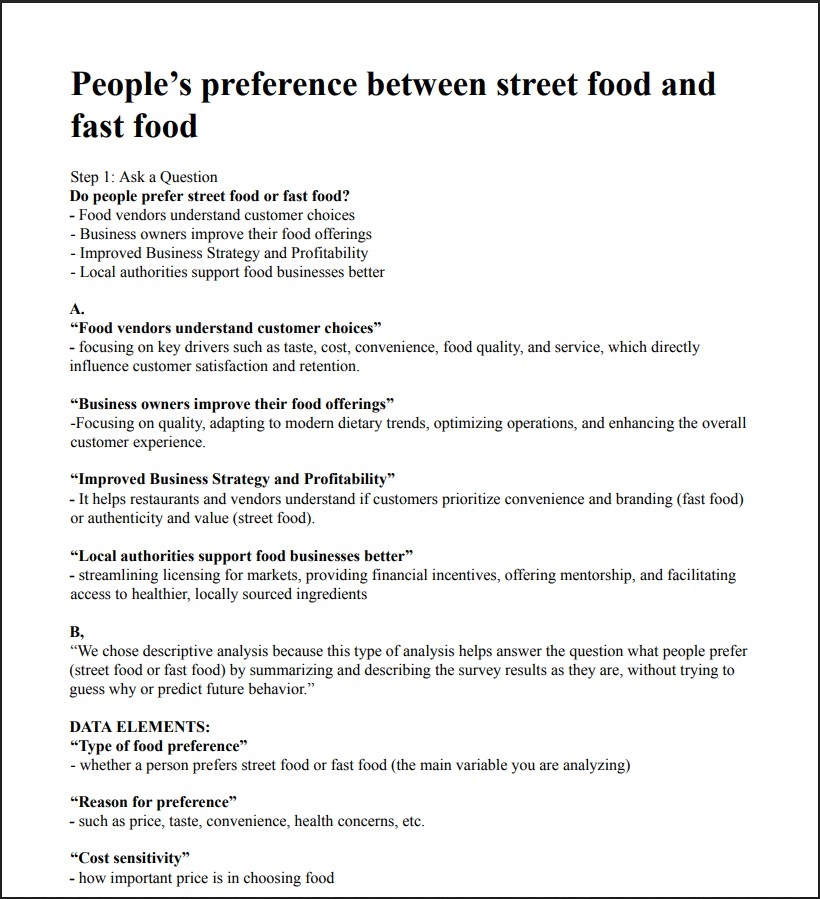
This task was designed to strengthen our ability to think critically and communicate effectively. By working in pairs, we practiced identifying key issues, framing questions in a clear and logical way, and analyzing responses to ensure deeper understanding. The activity helped us develop problem-solving skills that are essential in both academic and professional
Report/Sample Output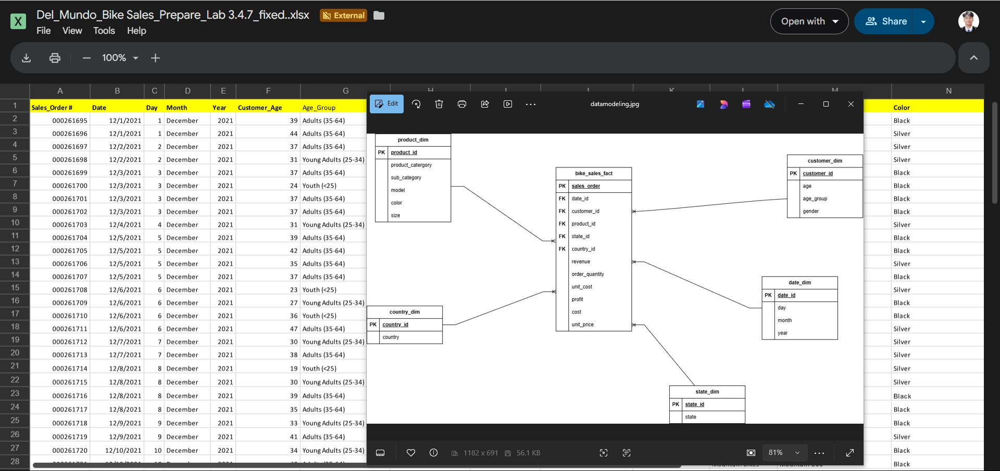
In this midterm lab, we worked on cleaning and preparing raw bike sales data using Excel. The process involved removing duplicate entries, handling missing values, correcting formatting issues, and organizing the dataset into a structured format. This task emphasized the importance of data integrity and accuracy, which are critical for reliable analysis and decision-making in real-world scenarios.
Raw Data File Report/Sample Output Data model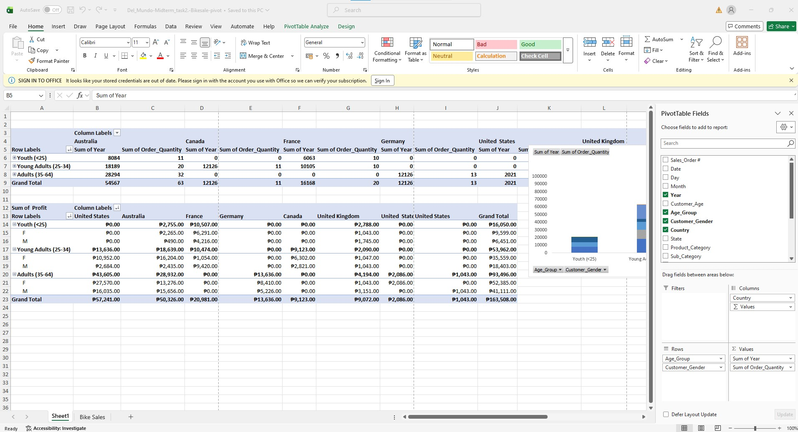
This task focused on using Excel’s pivot tables and charts to analyze bike sales data. We learned how to summarize large datasets, identify trends, and create visual representations that make complex information easier to understand. The exercise highlighted how pivot tables can transform raw data into meaningful insights, while charts provide a clear and professional way to present findings.
Raw Data File Report/Sample Output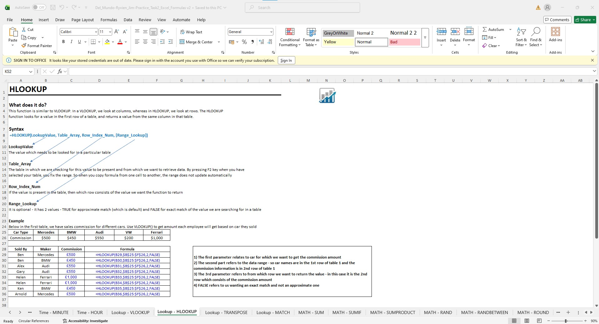
This practice task involved applying a wide range of Excel functions and formulas to solve practical problems. We explored functions such as VLOOKUP, IF statements, SUM, AVERAGE, and text manipulation formulas. The activity demonstrated how formulas can automate calculations, reduce errors, and improve efficiency when working with large datasets.
Raw Data File Report/Sample Output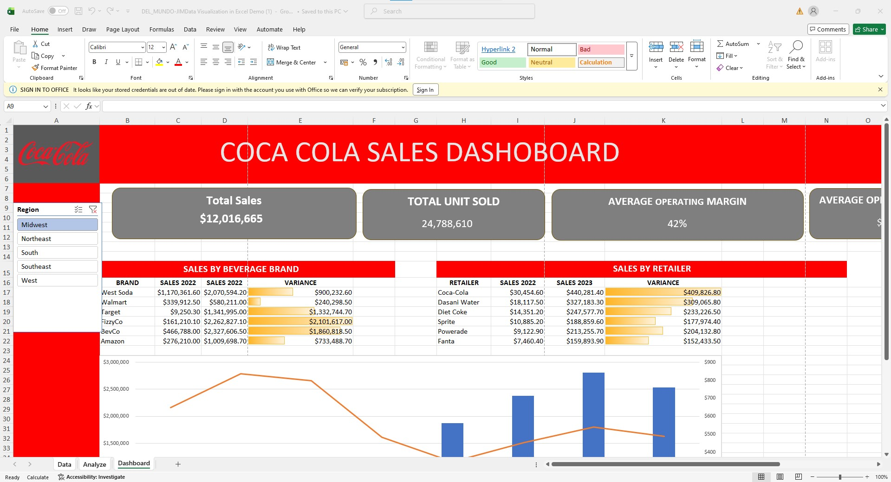
In this task, we designed interactive dashboards in Excel to visualize data trends and insights. The dashboards included charts, slicers, and dynamic elements that allowed users to filter and explore the data easily. This exercise highlighted the importance of data visualization in communicating findings clearly and supporting decision-making processes.
Raw Data File Report/Sample Output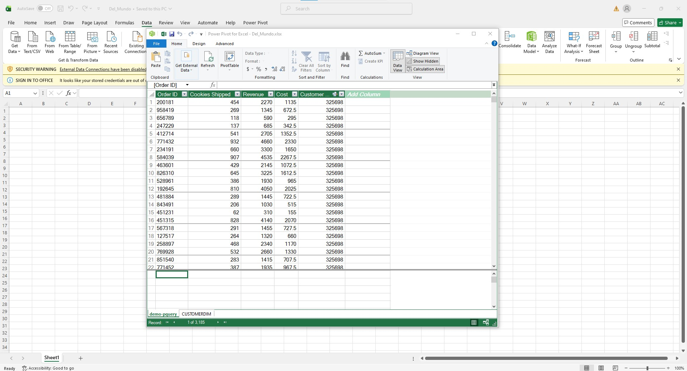
This practice task introduced us to Power Query, a powerful tool for data transformation and automation. We learned how to import data from multiple sources, clean and reshape it, and create queries that streamline repetitive tasks. Power Query is especially useful for preparing data before analysis, ensuring consistency and saving time in the long run.
Raw Data File Report/Sample Output
This midterm task focused on normalization using Power Query. We worked on restructuring datasets to ensure consistency, eliminate redundancy, and improve accuracy. By applying normalization techniques, we created cleaner datasets that are easier to analyze and maintain. This task reinforced the importance of proper data management practices in professional data analysis workflows.
Raw Data File Report/Sample Output Data model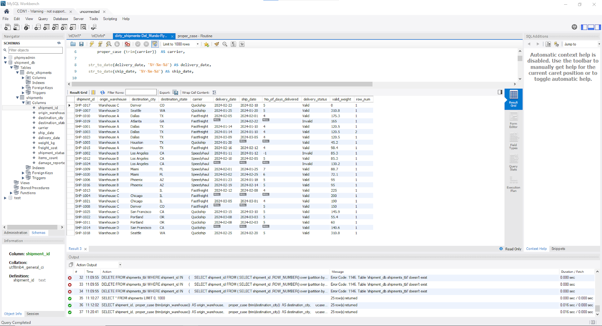
This SQL script is used to clean and organize shipment data by standardizing text fields, formatting dates, and correcting invalid values like negative weights. It calculates the number of delivery days and classifies shipments as valid, invalid, or same-day delivery. The query also uses ROW_NUMBER() to identify duplicate records based on key shipment details. Finally, it deletes duplicate entries, keeping only the first occurrence to ensure accurate and consistent data.
Raw Data File Report/Sample Output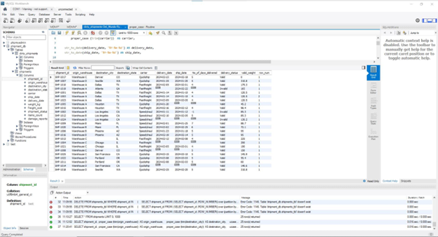
This task focuses on using SQL for data preparation and analysis by importing and working with a dataset from a CSV file. It involves creating tables, updating and cleaning data, and applying SQL functions to ensure consistency and accuracy. The activity also includes analyzing the dataset to extract meaningful insights. Overall, it demonstrates how SQL can be used to manage, clean, and analyze real-world data efficiently.
Report/Sample Output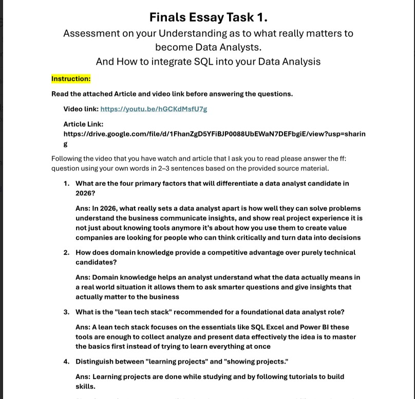
This task assesses our understanding of what it takes to become a data analyst, including the importance of analytical thinking, data handling, and problem-solving skills. It also focuses on how SQL is used in data analysis to clean, organize, and retrieve data efficiently. The activity highlights the role of SQL in transforming raw data into meaningful information. Overall, it shows how technical skills and proper tools are essential in real-world data analysis.
Report/Sample Output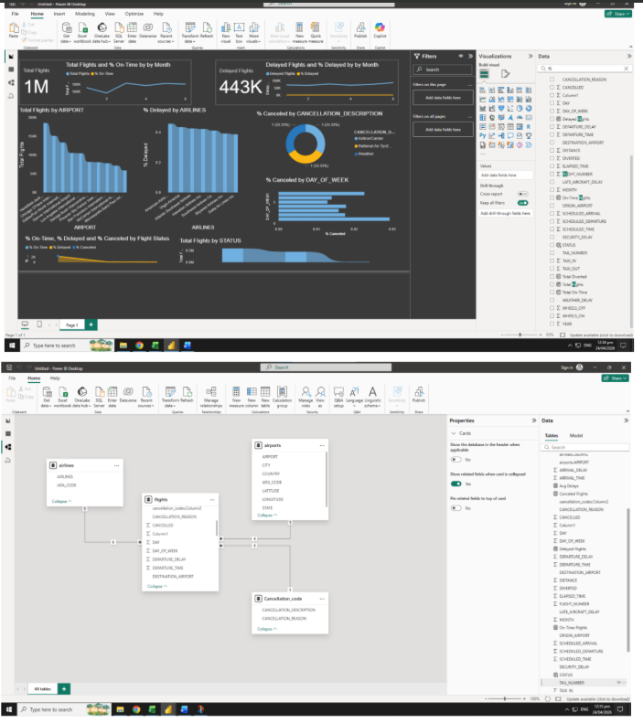
This task focuses on using Power BI to navigate and understand data through dashboards and data modeling. It involves creating visualizations to present data clearly and effectively. The data model is used to establish relationships between tables for better analysis. Overall, the task demonstrates how Power BI helps in transforming data into interactive and meaningful insights.
Raw Data File Report/Sample Output Report/Sample Output-2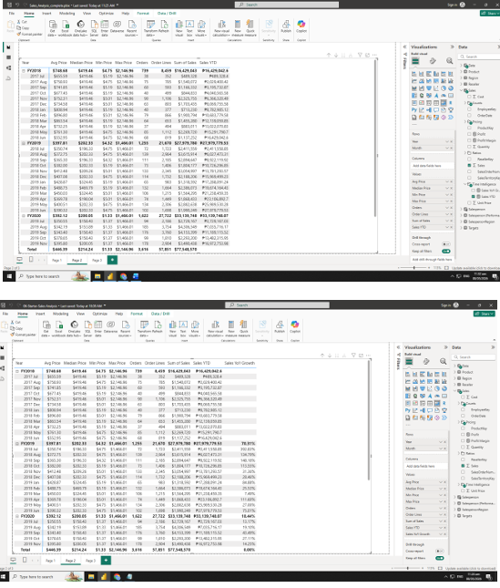
This task focuses on using DAX Time Intelligence functions in Power BI to analyze data based on time, such as daily, monthly, or yearly trends. It involves creating measures to compare values over time, like previous periods and year-to-date calculations. The task helps in understanding how time-based data can be analyzed for better insights. Overall, it demonstrates how DAX functions enhance data analysis by making time comparisons more dynamic and meaningful.
Raw Data File Report/Sample Output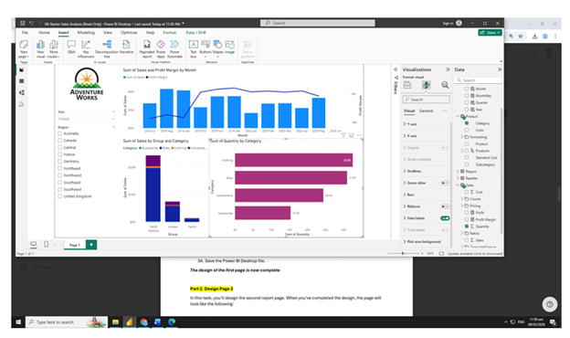
This task focuses on designing interactive reports using Power BI to present data in a more engaging and user-friendly way. It involves adding features like filters, slicers, and visuals that allow users to explore data dynamically. The goal is to improve data presentation and make insights easier to understand. Overall, it demonstrates how interactive reports enhance decision-making by allowing users to interact with the data in real time.
Raw Data File Report/Sample Output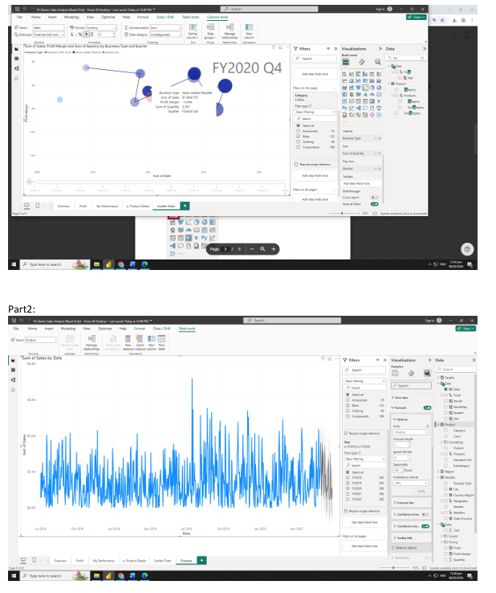
This task focuses on creating forecasting reports in Power BI to predict future trends based on historical data. It involves using built-in forecasting tools and visualizations to estimate upcoming values. The task helps in understanding patterns and making data-driven predictions. Overall, it demonstrates how forecasting can support better planning and decision-making.
Raw Data File Report/Sample Output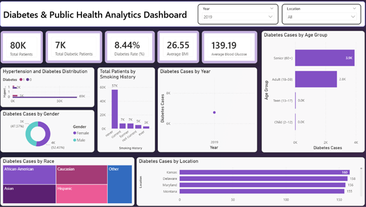
This final project focuses on applying data analytics techniques to a real-world dataset with at least 100,000 records. It involves data collection, cleaning, preprocessing, and performing exploratory data analysis using appropriate KPIs and visualizations. The project also includes building a data model and applying analytical methods such as descriptive or predictive analytics. An interactive Power BI dashboard is created to present insights clearly. Overall, the project highlights the process of turning raw data into meaningful insights and actionable recommendations.
Raw Data File Report/Sample Output